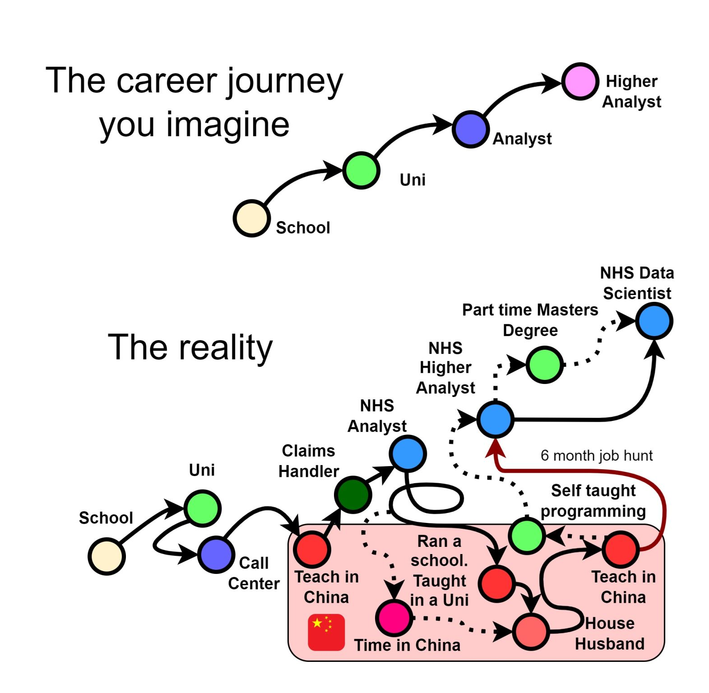

Data Science Community for Health and Care Newsletter May 2025

Welcome to the latest newsletter from the Data Science Community for Health and Care, brought to you by the NHS England Data Science Professional Development Functional Team.
The newsletter team are always happy to receive constructive feedback, and we invite you to send us any contributions you may have.
If you cannot access something of interest to you, please reach out.
Thanks for reading! – newsletter team
Dim Sum and Data Science
Welcome to another installment of our “Interview with a Data Scientist” series, where we explore the careers and work of the talented members of the NHS England Data Science team. We aim to showcase the fantastic individuals who contribute to the NHSE Data Science Profession and provide valuable insights for those considering a career in Data Science within the healthcare sector.
This week our interviewee is Adam Hollings, a Principal Data Scientist in the Data Science Team who recently moved from the SDE Service Team to the Central Data Science Team.
Read more…
How did you end up in data science at the NHS? What did you do before, and what really sparked your interest in this field?
 Figure 1. What I imagined my career journey to be like and what it actually ended up being like
My career journey has been quite a winding path, much like a plate of spaghetti, with significant detours between the UK and China. Along the way, I’ve held various roles, including a call centre agent, claims handler, NHS Analyst, University Teacher, school owner, house husband, NHS Higher Analyst, and now, an NHS Data Scientist.
It’s been a rather circuitous route, but I’ll do my best to capture the key details! I always enjoyed science at school and had a keen interest in anime, which led me to pursue Biology and Japanese at the University of Sheffield. After graduating, I spent a brief period working as an analyst in the NHS – a path my twin brother encouraged me to explore. However, most of my time was spent teaching in various educational institutions in rural China, with a year dedicated to learning Chinese in a cement factory and another as a house husband.
Living in China was an incredibly enriching experience. I gained invaluable skills in public speaking and learned how to explain complex concepts in English to non-experts and non-native speakers. Immersing myself in a completely different language and culture, and experiencing life as a minority in a vast country, taught me a great deal about resilience, adaptability, and cultural understanding – both the highs and the lows. I also developed a strong tolerance for very spicy food and hot weather!
After about seven years in China, I was ready for a new challenge. I’d been observing my brother’s career at NHS Digital and found myself increasingly drawn to the work he was doing. This prompted me to spend about a year self-learning programming, which ultimately led to me securing a job at NHS Digital in 2020.
I thrive on challenges and naturally approach problems with a data-driven, analytical mindset. While my brother’s introduction initially opened the door to the NHS, once I saw the potential and understood the impact I could have, I knew it was the right place for me.
Once you joined the NHS, what was that experience like? What different roles and teams have you been a part of, and how have they shaped your career?
I’ve now worked in the NHS for over five years. My initial roles were as a contingent labour data analyst within the publications teams, primarily focusing on maternity and IAPT (Talking Therapies) data. I then successfully secured a permanent position and subsequently applied for and completed the Data Science MRes programme through NHS Digital at Leeds University.
It was the MRes programme itself that truly ignited my passion for data science. The rapid pace of developments in machine learning, the critical questioning of established methods and techniques, and the constant exploration of how cutting-edge innovations could directly benefit patients – it was exhilarating. I knew I wanted to be at the forefront of this field.
Following the MRes, I took on a role as a Data Wrangler in the NHS England Secure Data Environment (SDE) Service Team. I spent several fulfilling years there, working alongside a fantastic team, enabling numerous analysts and researchers to conduct vital research on vast amounts of de-identified NHS data. This position provided me with invaluable experience collaborating with high-profile stakeholders like the Department of Health and Social Care (DHSC) and Health Data Research UK (HDR UK). My previous teaching experience proved incredibly beneficial when it came to inducting and advising new users of the SDE. My time with the SDE service team also allowed me to build connections with members of the Central Data Science Team, which ultimately encouraged me to seek future opportunities within NHS England.
Eventually, I wanted to transition from enabling others’ data science work to having a more direct, hands-on role myself. So, this year, I embarked on an exciting new chapter within the Central Data Science Team.
What are you currently working on? Are there any projects that you’re particularly excited about, or that you feel are making a real difference? What impact are you having?
I’ve recently joined the A&E Forecasting project, which was recently nominated as an AI Exemplar. The ability to accurately forecast A&E attendances and admissions has the potential to significantly aid planning across almost every hospital in the country. Knowing that I’ll be contributing to maintaining and improving this crucial model is incredibly exciting. My current focus is on enhancing how weather data is incorporated into the model. It’s been fascinating to delve deeper into using the Unified Data Access Layer (UDAL) and learning the intricacies of the Federated Data Platform (FDP), as most of my recent years were spent working with the Data Access Environment (DAE) and the SDE. After learning Chinese and Japanese, I’m certainly not afraid of being thrown into new situations and having to acquire new skills!
Beyond this, I also have a keen interest in open-source large language models (LLMs) and have recently been appointed as the team’s technical lead in this area. Additionally, I’m deeply invested in causal inference methodology, understanding the potentially disastrous consequences of improperly applied causal analysis.
I’m also committed to ensuring our projects achieve the greatest possible impact by actively supporting the Marketing and Communications function team. Given the current organisational landscape, I believe it’s especially critical to ensure that our work and its significant benefits are well-understood across both NHS England and the DHSC. Recent Marketing and Comms initiatives I’ve contributed to include setting up the Data Science Team’s SharePoint page, gathering and submitting entries for the Advanced Analytics Analytical Prospectus, and currently working on the Data Science Brochure.
If you’re looking to enhance the reach and impact of your project, please don’t hesitate to get in touch with myself, Amaia or Will!
Events
Lots of exciting things coming up! See the full calendar here, and a small selection below.
Research Showcase: Understanding the impacts of generative AI use on children
Tuesday 3rd June, 14:30 - 16:00, Online
New research from the UK shows that almost a quarter of children aged 8 – 12 already use generative AI, but these tools have not been designed with children’s needs in mind. This leads to children being exposed to inappropriate or harmful content and risks potential negative impacts on children’s wellbeing.
Yet the research also demonstrates that children are excited about the ways generative AI could be used to support them in their learning and for play, if developed and deployed responsibly.
Over the course of the “Understanding the impacts of generative AI use on children” project, The Alan Turing Institute’s Children and AI team and AI for Public Services team have explored the perspectives of children, parents, carers and teachers on generative AI technologies. Their research was guided by the framework for children’s online well-being established by the UNICEF project ‘Responsible Innovation in Technology for Children’.
This webinar will share the key findings of the project’s two work packages namely, surveys with children, parents, carers and teachers, and school-based engagements undertaken in collaboration with Children’s Parliament. Researchers will share insights into the observed impacts of generative AI on children’s wellbeing and additional insights from teachers about how generative AI is being used within classrooms.
This webinar is free to attend; just register and you will receive the link!
Health Data Science Seminar Series
Wednesday 4th June, 14:00 - 15:30, Online
This series of seminars presents an exciting opportunity to hear about recent developments in health data science, generate ideas and help build the health data science community. It is hosted by the ONS’s Data Science Campus and Health Analysis Team in partnership with Health Data Research UK (HDR UK).
The Health Data Science Seminar series provides a dedicated space for data scientists, policymakers, health professionals, academics, epidemiologists, statisticians and other members of the data science community to come together and explore the potential of data science, to help improve health and health policy. Sign up now and be part of the conversation - it’s free!
Please note, this seminar takes place on Microsoft Teams, with the access link to be sent to all registered attendees at least 24 hours before the start of the event.
If you have any questions about this seminar, please email outreach.engagement.community@ons.gov.uk.
ONS Local Workshop: Using R for regional economic analysis, taster session
Tuesday 17th June, 09:30 - 11:00, Online
This 90 minute session will introduce using R and RStudio for regional data analysis, with a focus on economic data. No experience with R is necessary. You can attend without coding, but if you’d like to follow along with some economic data wrangling and don’t yet have R/RStudio, please follow this short guide to getting set up with R before the session, and you’ll be ready to go. Using mainly ONS region-by-industry GVA data, we’ll look at wrangling data, making visualisations and other analysis tasks, and using libraries like tidyverse.
As well as introducing R, the session will talk about why open and reproducible data analysis can be so valuable, and run through examples of using it to produce pipelines from ONS data through to reports, maps and other outputs. The session will leave time to discuss the pros, cons and challenges of using tools like this, which will help shape future R training sessions.
The session is free and a ticket is required.
Data for development
Tuesday 17th June, 13:00 - 14:00, In person (Marshall Building, London School of Economics and Political Science) and online
Data plays a crucial role in designing effective development policies, yet its availability and use in low- and middle-income countries remain inconsistent. In some cases, data is simply unavailable, in others it exists but remains underutilised due to limited access or awareness.
Our panel explores how these challenges can be addressed and examines the transformative role of data in shaping global development initiatives. They discuss the potential of leveraging both existing data and AI tools to generate insights and inform policies that drive sustainable growth.
This event is part of the “LSE Festival: Visions for the Future” running from Monday 16 to Saturday 21 June 2025, with a series of events exploring the threats and opportunities of the near and distant future, and what a better world could look like.
This event is free and open to all, and a ticket is required.
Big Data LDN
Wednesday 24th - Thursday 25th September, All Day, London
Big Data LDN is the UK’s leading free to attend data, analytics and AI conference & exhibition.
The two day event is a hub for the Data Community to learn and share best practice, build relationships and find the tools needed to develop an effective data-driven business.
See more future events on the calendar
Know of any events we should feature next month? Let us know by clicking the “Contribute” button, or here.
Exploring associations in survey data with machine learning and tidymodels: AnalystX DS Huddle
17th of June 2025, 13:30 - 14:30, Online
The Data Science Community for Health and Care has organised a talk on exploring associations in survey data with machine learning and tidymodels. Have a read of the abstract below:
Supervised machine learning can be used to understand the factors associated with a result or outcome. In this huddle we will compare using two different machine learning algorithms to explore the results of the General Practice Patient Survey, a national publicly-available dataset. What can supervised learning tell us about factors that are associated with overall patient satisfaction? And how can using different algorithms for the same machine learning task strengthen the quality and robustness of our findings? R and the tidymodels collection of packages will be used to show how different models can be applied to the same dataset with minimum fuss, though the approach will also be of interest to users of Python and other programming languages. This work continues to evolve, and constructive feedback is very welcome!
Check out the recording for previous talks here! We will also add the recording for this AnalystX DS Huddle at a later date.
If you would like to be invited to future events of ours, sign up to our mailing list!
Check out our collection of training resources in the Resources Section! Can you spot something missing? Contact us!